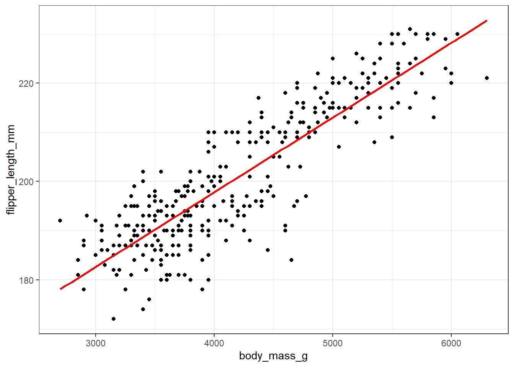
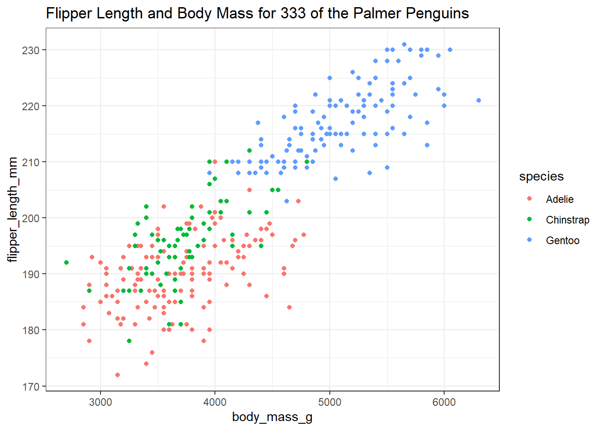

Chapter 2 Looking at the Palmer Penguins
The data in the palmerpenguins package in R include size measurements, clutch observations, and blood isotope ratios for adult foraging Adélie, Chinstrap, and Gentoo penguins observed on islands in the Palmer Archipelago near Palmer Station, Antarctica. The data were collected and made available by Dr. Kristen Gorman and the Palmer Station Long Term Ecological Research (LTER) Program.
For more on the palmerpenguins package, visit https://allisonhorst.github.io/palmerpenguins/.
2.1 Package Loading, then Dealing with Missing Data
To start, let’s load up the necessary R packages to manage the data and summarize it in a small table, and a plot. We’ve actually done this previously, but we’ll repeat the steps here, because it’s worth seeing what R is doing.
In this case, we’ll load up five packages.
library(palmerpenguins) # source for the data set
library(janitor) # some utilities for cleanup and simple tables
library(magrittr) # provides us with the pipe %>% for code management
library(dplyr) # part of the tidyverse: data management tools
library(ggplot2) # part of the tidyverse: tools for plotting dataIt’s worth remembering that everything after the # on each line above is just a comment for the reader, and is ignored by R. We’ll see later that the loading of a single package (called tidyverse) gives us both the dplyr and ggplot2 packages, as well as several other useful things.
Next, let’s take the penguins data from the palmerpenguins package, and identify those observations which have complete data (so, no missing values) in four variables of interest. We’ll store that result in a new data frame (think of this as a data set) called new_penguins and then take a look at that result using the following code.
new_penguins <- penguins %>%
filter(complete.cases(flipper_length_mm, body_mass_g, species, sex))
new_penguins# A tibble: 333 x 8
species island bill_length_mm bill_depth_mm flipper_length_~ body_mass_g
<fct> <fct> <dbl> <dbl> <int> <int>
1 Adelie Torge~ 39.1 18.7 181 3750
2 Adelie Torge~ 39.5 17.4 186 3800
3 Adelie Torge~ 40.3 18 195 3250
4 Adelie Torge~ 36.7 19.3 193 3450
5 Adelie Torge~ 39.3 20.6 190 3650
6 Adelie Torge~ 38.9 17.8 181 3625
7 Adelie Torge~ 39.2 19.6 195 4675
8 Adelie Torge~ 41.1 17.6 182 3200
9 Adelie Torge~ 38.6 21.2 191 3800
10 Adelie Torge~ 34.6 21.1 198 4400
# ... with 323 more rows, and 2 more variables: sex <fct>, year <int>2.2 Counting Things and Making Tables
So, how many penguins are in our new_penguins data? When we printed out the result, we got an answer, but (as with many things in R) there are many ways to get the same result.
[1] 333How do our new_penguins data break down by sex and species?
sex Adelie Chinstrap Gentoo
female 73 34 58
male 73 34 61Note the strange spelling of tabyl here. The output is reasonably clear, but could we make that table a little prettier, and while we’re at it, can we add the row and column totals to it?
new_penguins %>%
tabyl(sex, species) %>%
adorn_totals(where = c("row", "col")) %>% # add row, column totals
kable # one convenient way to make the table prettier| sex | Adelie | Chinstrap | Gentoo | Total |
|---|---|---|---|---|
| female | 73 | 34 | 58 | 165 |
| male | 73 | 34 | 61 | 168 |
| Total | 146 | 68 | 119 | 333 |
2.3 Visualizing the Data in a Graph (or a few…)
Now, let’s look at the other two variables of interest. Let’s create a graph showing the association of body mass with flipper length across the complete set of 333 penguins.

Some of you may want to include a straight-line model (fit by a classical linear regression) to this plot. One way to do that in R involves the addition of a single line of code, like this:
ggplot(new_penguins, aes(x = body_mass_g, y = flipper_length_mm)) +
geom_point() +
geom_smooth(method = "lm", col = "red", se = FALSE)
Whenever we build a graph for ourselves, these default choices may be sufficient. But I’d like to see a prettier version if I was going to show it to someone else. So, I might use a different color for each species, and I might neaten up the theme (to get rid of the default grey background) and add a title, like this.
ggplot(new_penguins, aes(x = body_mass_g, y = flipper_length_mm, col = species)) +
geom_point() +
theme_bw() +
labs(title = "Flipper Length and Body Mass for 333 of the Palmer Penguins")
2.4 Six Ways To “Improve” This Graph
Now, let’s build a new graph. Here, I want to:
- plot the relationship between body mass and flipper length in light of both Sex and Species
- increase the size of the points and add a little transparency so we can see if points overlap,
- add some smooth curves to summarize the relationships between the two quantities (body mass and flipper length) within each combination of species and sex,
- split the graph into two “facets” (one for each sex),
- improve the axis labels,
- improve the titles by adding a subtitle, and also adding in some code to count the penguins (rather than hard-coding in the total number.)
ggplot(new_penguins, aes(x = body_mass_g, y = flipper_length_mm,
col = species)) +
geom_point(size = 2, alpha = 0.5) +
geom_smooth(method = "loess", se = FALSE, size = 1.5) +
facet_grid(~ sex) +
theme_bw() +
labs(title = "Flipper Length and Body Mass, by Sex & Species",
subtitle = paste0(nrow(new_penguins), " of the Palmer Penguins"),
x = "Body Mass (g)",
y = "Flipper Length (mm)")
2.5 A Little Reflection
What can we learn from these plots and their construction? In particular,
- What do these plots suggest about the center of the distribution of each quantity (body mass and flipper length) overall, and within each combination of Sex and Species?
- What does the final plot suggest about the spread of the distribution of each of those quantities in each combination of Sex and Species?
- What do the plots suggest about the association of body mass and flipper length across the complete set of penguins?
- How does the shape and nature of this body mass - flipper length relationship change based on Sex and Species?
- Do you think it would be helpful to plot a straight-line relationship (rather than a smooth curve) within each combination of Sex and Species in the final plot? Why or why not? (Also, what would we have to do to the code to accomplish this?)
- How was the R code for the plot revised to accomplish each of the six “wants” specified above?